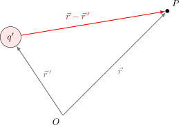

Campo Eléctrico#
El Campo Eléctrico (\(\vec{E}\)) se define como la fuerza electrostática por unidad de carga. Es una magnitud vectorial que describe la perturbación que una carga eléctrica provoca en el espacio que la rodea.
Se define mediante la siguiente expresión:
Nota sobre la dirección: Se considera que la carga de prueba es positiva (\(q > 0\)). Por lo tanto, el vector de fuerza (\(\vec{F}\)) siempre apuntará en la misma dirección que el vector de campo eléctrico (\(\vec{E}\)).
Formulación para una Carga Puntual#
Para determinar el campo en un punto \(P\) ubicado en la posición \(\vec{r}\), producido por una carga \(q'\) situada en \(\vec{r}\,'\), utilizamos la diferencia vectorial:
{kind=link}

Simplificando la expresión, obtenemos la forma estándar para el campo eléctrico en el punto \(P\):
Show code cell source
from IPython.display import display, HTML
simulacion_campo_html = """
<div style="border: 1px solid #e0e0e0; padding: 20px; border-radius: 8px; background-color: #f8f9fa; font-family: -apple-system, BlinkMacSystemFont, 'Segoe UI', Roboto, Arial, sans-serif;">
<h3 style="margin-top:0; color: #2c3e50;">Simulación Interactiva: Campo Eléctrico</h3>
<div style="display: flex; gap: 20px; flex-wrap: wrap; margin-bottom: 15px;">
<div style="flex: 1; min-width: 200px;">
<label style="font-weight: 600; display: block; margin-bottom: 5px;">Polaridad de la Carga:</label>
<label style="cursor: pointer; margin-right: 15px;">
<input type="radio" name="charge_sign" value="1" checked id="sim_q_pos"> Positiva (+1 µC)
</label>
<label style="cursor: pointer;">
<input type="radio" name="charge_sign" value="-1" id="sim_q_neg"> Negativa (-1 µC)
</label>
</div>
<div style="flex: 2; min-width: 300px;">
<div style="margin-bottom: 10px;">
<label style="font-weight: 600; display: inline-block; width: 90px;">Eje X: <span id="sim_val_x" style="font-weight: normal;">0.0</span> m</label>
<input type="range" id="sim_slider_x" min="-4" max="4" step="0.1" value="0" style="width: 60%; vertical-align: middle;">
</div>
<div>
<label style="font-weight: 600; display: inline-block; width: 90px;">Eje Y: <span id="sim_val_y" style="font-weight: normal;">0.0</span> m</label>
<input type="range" id="sim_slider_y" min="-4" max="4" step="0.1" value="0" style="width: 60%; vertical-align: middle;">
</div>
</div>
</div>
<div style="text-align: center;">
<canvas id="efield_canvas" width="600" height="400" style="background: white; border: 1px solid #ccc; border-radius: 4px; box-shadow: 0 2px 5px rgba(0,0,0,0.05);"></canvas>
</div>
</div>
<script>
(function() {
const canvas = document.getElementById('efield_canvas');
const ctx = canvas.getContext('2d');
const slider_x = document.getElementById('sim_slider_x');
const slider_y = document.getElementById('sim_slider_y');
const val_x = document.getElementById('sim_val_x');
const val_y = document.getElementById('sim_val_y');
const q_pos = document.getElementById('sim_q_pos');
const q_neg = document.getElementById('sim_q_neg');
function drawField() {
// Limpiar lienzo
ctx.clearRect(0, 0, canvas.width, canvas.height);
// Leer valores actuales
let xc = parseFloat(slider_x.value);
let yc = parseFloat(slider_y.value);
let q = q_pos.checked ? 1 : -1;
val_x.innerText = xc.toFixed(1);
val_y.innerText = yc.toFixed(1);
// Funciones de mapeo de coordenadas (De -5..5 a píxeles)
const mapX = (x) => (x + 5) * (canvas.width / 10);
const mapY = (y) => canvas.height - ((y + 5) * (canvas.width / 10)) - (canvas.height - canvas.width)/2;
// Dibujar vectores (Grilla de -4.5 a 4.5)
for(let x = -4.5; x <= 4.5; x += 0.5) {
for(let y = -4.5; y <= 4.5; y += 0.5) {
let dx = x - xc;
let dy = y - yc;
let r2 = dx*dx + dy*dy;
if(r2 < 0.1) continue; // Evitar la singularidad en el centro de la carga
let r = Math.sqrt(r2);
// Cálculo simplificado de magnitud para visualización
let Ex = q * dx / (r * r2);
let Ey = q * dy / (r * r2);
let Emag = Math.sqrt(Ex*Ex + Ey*Ey);
// Normalizar longitud de flechas
let scale = 0.25 / Emag;
if (scale > 0.4) scale = 0.4;
let px = mapX(x);
let py = mapY(y);
let u = Ex * scale * (canvas.width / 10);
let v = -Ey * scale * (canvas.width / 10); // Eje Y invertido en Canvas
// Color termográfico (de azul/morado a amarillo/rojo según intensidad)
let intensity = Math.min(1, Emag * 1.5);
let r_col = Math.floor(255 * intensity);
let g_col = Math.floor(150 * intensity);
let b_col = Math.floor(255 * (1 - intensity));
ctx.strokeStyle = `rgb(${r_col}, ${g_col}, ${b_col})`;
// Dibujar cuerpo de la flecha
ctx.beginPath();
ctx.moveTo(px, py);
ctx.lineTo(px + u, py + v);
ctx.lineWidth = 1.5;
ctx.stroke();
// Dibujar cabeza de la flecha
let angle = Math.atan2(v, u);
ctx.beginPath();
ctx.moveTo(px + u, py + v);
ctx.lineTo(px + u - 5 * Math.cos(angle - Math.PI/6), py + v - 5 * Math.sin(angle - Math.PI/6));
ctx.lineTo(px + u - 5 * Math.cos(angle + Math.PI/6), py + v - 5 * Math.sin(angle + Math.PI/6));
ctx.fillStyle = ctx.strokeStyle;
ctx.fill();
}
}
// Dibujar la carga central
let cx = mapX(xc);
let cy = mapY(yc);
ctx.beginPath();
ctx.arc(cx, cy, 14, 0, 2*Math.PI);
ctx.fillStyle = q > 0 ? '#dc3545' : '#0d6efd'; // Rojo para +, Azul para -
ctx.fill();
ctx.lineWidth = 2;
ctx.strokeStyle = '#333';
ctx.stroke();
// Signo interior
ctx.fillStyle = 'white';
ctx.font = 'bold 18px Arial';
ctx.textAlign = 'center';
ctx.textBaseline = 'middle';
ctx.fillText(q > 0 ? '+' : '-', cx, cy);
}
// Asignar eventos para redibujar en tiempo real
slider_x.addEventListener('input', drawField);
slider_y.addEventListener('input', drawField);
q_pos.addEventListener('change', drawField);
q_neg.addEventListener('change', drawField);
// Dibujo inicial
drawField();
})();
</script>
"""
display(HTML(simulacion_campo_html))
Simulación Interactiva: Campo Eléctrico
Show code cell source
from IPython.display import display, HTML
phet_iframe = """
<div style="width: 100%; text-align: center; margin-bottom: 20px;">
<h3 style="margin-bottom: 10px;">Laboratorio Virtual: Cargas y Campos</h3>
<iframe src="https://phet.colorado.edu/sims/html/charges-and-fields/latest/charges-and-fields_es.html"
width="100%"
height="500"
scrolling="no"
allowfullscreen>
</iframe>
</div>
"""
display(HTML(phet_iframe))
Laboratorio Virtual: Cargas y Campos
Show code cell source
from IPython.display import HTML
# Usamos triple comilla simple (''') para poder pegar el HTML tal cual
codigo_sonido = '''
<div style="background-color: #f0f8ff; border-left: 6px solid #2196F3; padding: 20px; border-radius: 8px; font-family: sans-serif; box-shadow: 0 4px 6px rgba(0,0,0,0.1);">
<h3 style="color: #0d47a1; margin-top: 0;">🎧 Experimento: Escucha el Campo Eléctrico</h3>
<p>Mueve la "Carga de Prueba" hacia la izquierda. El sonido representa la intensidad del campo eléctrico.</p>
<div style="display: flex; align-items: center; gap: 15px; margin: 20px 0;">
<button id="btnAudio" onclick="toggleAudio()" style="background-color: #2196F3; color: white; border: none; padding: 10px 24px; border-radius: 50px; cursor: pointer; font-weight: bold; transition: all 0.3s;">
▶️ Activar Sonido
</button>
<span id="statusText" style="color: #666; font-style: italic;">Silencio</span>
</div>
<label style="font-weight: bold; color: #333;">Distancia (r):</label>
<input type="range" id="distSlider" min="0.5" max="10" step="0.1" value="5" style="width: 100%; margin-top: 10px; cursor: pointer;">
<p style="margin-top: 15px;">Frecuencia percibida: <span id="freqDisplay" style="font-weight: bold; color: #2196F3; font-size: 1.2em;">--- Hz</span></p>
<script>
var audioCtx_v2;
var oscillator_v2;
var gainNode_v2;
var isPlaying_v2 = false;
function initAudio() {
if (!audioCtx_v2) {
audioCtx_v2 = new (window.AudioContext || window.webkitAudioContext)();
}
}
function toggleAudio() {
initAudio();
var btn = document.getElementById("btnAudio");
var status = document.getElementById("statusText");
if (isPlaying_v2) {
// Detener suavemente
var now = audioCtx_v2.currentTime;
gainNode_v2.gain.exponentialRampToValueAtTime(0.001, now + 0.1);
oscillator_v2.stop(now + 0.1);
btn.innerHTML = "▶️ Activar Sonido";
btn.style.backgroundColor = "#2196F3";
status.innerHTML = "Silencio";
isPlaying_v2 = false;
} else {
// Iniciar
oscillator_v2 = audioCtx_v2.createOscillator();
gainNode_v2 = audioCtx_v2.createGain();
oscillator_v2.type = 'sine';
oscillator_v2.connect(gainNode_v2);
gainNode_v2.connect(audioCtx_v2.destination);
// Volumen inicial bajo para no asustar
gainNode_v2.gain.setValueAtTime(0.1, audioCtx_v2.currentTime);
updateSound();
oscillator_v2.start();
btn.innerHTML = "⏹ Detener";
btn.style.backgroundColor = "#ef5350"; // Rojo suave
status.innerHTML = "🔊 Emitiendo señal...";
isPlaying_v2 = true;
}
}
function updateSound() {
if (!isPlaying_v2) return;
var r = parseFloat(document.getElementById("distSlider").value);
// Física: f = Base + (Constante / r^2)
// Cuando r es pequeño (cerca), el denominador es pequeño -> frecuencia explota
var frecuencia = 150 + (3000 / (r * r));
// Limitador de seguridad para oídos (máx 1500Hz)
if (frecuencia > 1500) frecuencia = 1500;
// Transición suave de frecuencia (para que no suene "robótico")
oscillator_v2.frequency.setTargetAtTime(frecuencia, audioCtx_v2.currentTime, 0.1);
// También aumentamos el volumen al acercarse
var volumen = 0.5 / (r * 0.5);
if (volumen > 1) volumen = 1;
gainNode_v2.gain.setTargetAtTime(volumen, audioCtx_v2.currentTime, 0.1);
document.getElementById("freqDisplay").innerHTML = Math.round(frecuencia) + " Hz";
}
// Listener para el slider
var slider = document.getElementById("distSlider");
slider.removeEventListener("input", updateSound); // Limpiar previos
slider.addEventListener("input", updateSound);
</script>
</div>
'''
HTML(codigo_sonido)
🎧 Experimento: Escucha el Campo Eléctrico
Mueve la "Carga de Prueba" hacia la izquierda. El sonido representa la intensidad del campo eléctrico.
Frecuencia percibida: --- Hz